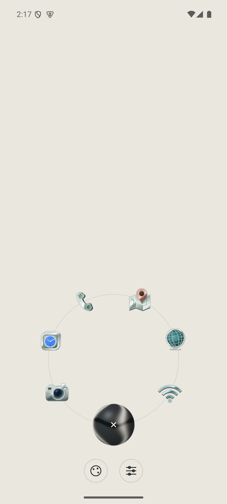

Android · Early test build
Six shortcuts.
One place to start.
Your camera, a favourite app, a person to call, a place to go. Keep the things you choose around a single button.
Try Quick Access on your phone and help find out whether it earns a place on your home screen.
Download for Android APK · 0.2.1Free to test · Android 8.0 or newer
No account needed. Installed outside Google Play.

Get started
Install on your phone
This is an early test version. Phone and launcher compatibility are still being checked.
Download the APK
Open this page on an Android phone and tap Download for Android. Open quick-access-0.2.1.apk from your browser’s downloads.
Allow this installation, if prompted
Android may open Install unknown apps settings. Allow your browser or file manager to install the APK, then return and tap Install. Wording varies by phone. You can turn that permission off again afterwards.
Open Quick Access
Tap the main button to reveal the ring. Use Configure shortcuts (the sliders button) to choose your six actions, and Change button (the palette) to choose a style.
The first ten minutes
Make it yours.
Then use it.
The useful question: does this make an everyday action easier than your usual way?
Choose actions you actually use
Try an app, Camera, a phone number, a place, a website or Wi-Fi settings. Clock is also available. Phone shortcuts open the dialler; you still decide whether to call.
Put the widget on your home screen
Long-press an empty area, choose Widgets, then find Quick Access. The widget is a still button that opens the shortcut ring.
Try both ways of choosing
Tap the main button, then a shortcut. Or press the main button, slide to a shortcut and release. Check whether either feels comfortable with one hand.
Give it an ordinary day
Try a different style, larger text and a phone restart. If you use TalkBack, try your normal gestures and listen to the labels. Note any wrong action, delay, heat or unusual battery use.
Tell us what happened
A small report
goes a long way.
Send this to David in the conversation where he shared the link. One specific example is more useful than a rating.
Notes stay in this tab and are not sent or saved automatically. Copy them before leaving. Remove phone numbers, home addresses and other private details from screenshots.
Prefer GitHub? File a public test report (account required).
Before you try it
Data & build details
What stays on your phone?
Quick Access stores your shortcuts and appearance settings on your device. It has no account, analytics, ads or internet permission. It does not read your contacts. It lists launchable apps so you can choose a shortcut.
An action passes its destination to the app you open, such as a phone number to the dialler or an address to a maps app. Those apps have their own permissions and privacy practices.
Exporting actions creates a file that may contain saved numbers and addresses. Keep it private. Uninstalling removes the app’s local settings, but does not remove exported files.
What has been tested?
The app has passed automated action-validation tests and emulator checks for editing, large text, missing-app repair, saved settings and widget recovery. The signed 0.2.1 build also passed fresh installation, editing, restart and reinstall checks.
Real-phone performance, battery use, different manufacturers’ launchers and complete TalkBack gesture and audio behaviour remain unverified. This trial is intended to find those gaps.
Version, updates & file verification
Version 0.2.1 · build 3 · 21 November 2026.
Signed testing APK. Android 8.0+; English interface.
Updates will appear on this page. Download and install a newer build over the existing app to retain settings; there is no automatic updater. Keep the existing app installed unless an update instruction explicitly says otherwise.
APK SHA-256
ac1b01077f9b08bf1b73044c1656a31b7aa15083029bd7b4b1fd12961f93f222About this website
This page has no analytics, advertising, external fonts or form-submission service. Your notes are copied only when you ask. GitHub hosts the page and downloads and may process technical access information under its privacy statement. GitHub issue reports are public.